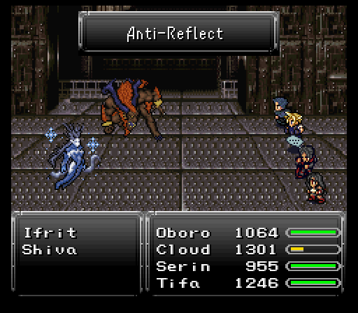
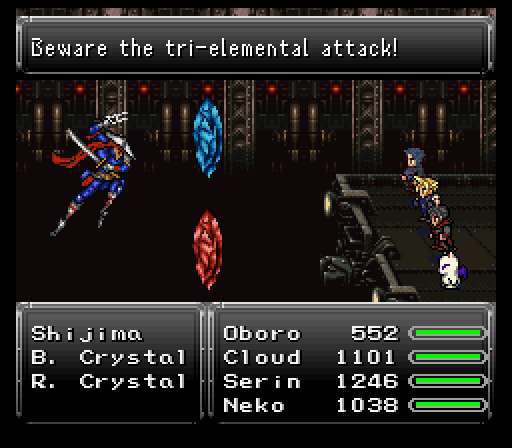
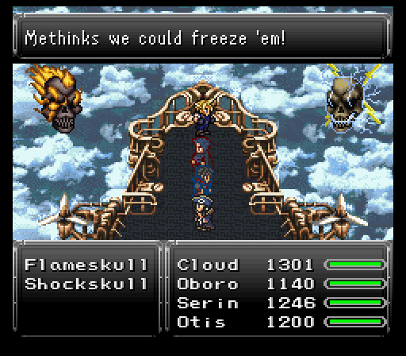
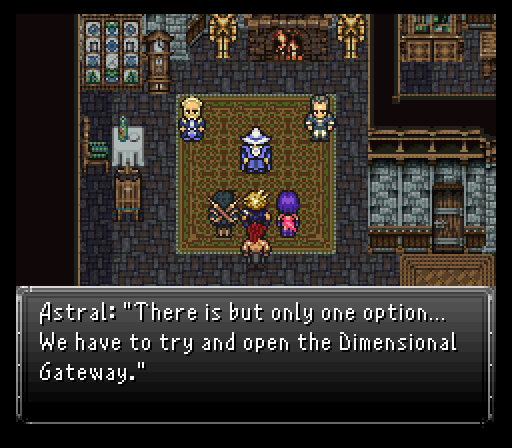

Part 13: Magitek Facility Infiltration
Magitek Research Facility:
All set to invade the Magitek Research Facility and it begins in Ornyx. To the northeast of the entrance is someone closely aligned with the Crimson Blades. When you're ready to put the plan into action, say yes to him and he'll go create a distraction while you take a sneaky detour to get behind the guards. The Magitek Research Facility is straight north afterwards.
First thing you're going to notice is that Vanguard blocking the entrance. He's only solo, but he can output some high damage, especially if he focus fires a Giga Volt on a target which can break 1000 damage. With everyone on offense though, even that shouldn't become an issue.


New to this version are multiple NPCs sprinkled around the Magitek Research Facility which I really like. It gives off that vibe of being an active and important area that the Empire is putting in all of its manpower into. So much so that the random battles here get a battle theme, something that's rarely been done before in this adventure.
Speaking of the randoms, the damage they do is starting to rise to noticeable levels. Be careful if you decide to have multiple people in the front row since they can easily lose 500-600 health in an instant if a physical skill gets aimed at them.
Monsters inside the Magitek Facility:
- Tiger-Wolf - Tougher spellcasting dog-monster.
- Commando - Tougher spellcasting soldier.
- Clockwerk - Fought these guys earlier at the Fraust battle with Kefka.
- Gaelicat - Uses Break if it is the only or last monster alive.
- GoldenFlan - Encountered them way back in Ronan's scenario, inside the Zolom Trench cave, but here they split into more of them once killed.
- War Golem - Uses Magnitude Eight and loves to counter with Black Shock, crippling the target's damage output if it connects. Will also 100% counter Reels or Havoc with either a regular attack, special attack, or Life Purge.
- Riot Mecha - Mainly uses its special attack, Uzzi Punch. Has a 2/3 chance to counter regular attacks with Magitek Laser, and a 2/3 chance to counter magic with Missile. Will use buffs on itself after some time.
As for Oboro, there's two big reasons I brought him along. One won't be apparent until a while from now, but the other reason is that there's lots of nice steals. Nothing better than what you have, but they have good selling value at the shops so it's worth it to gear him up with his Thief Gloves & Speed Boots so he can get in as many steal attempts as possible per battle.


The loot in the chests around the area are pretty good too. You'll get a copy of each of the elemental weapons that the esper disguised as a human offered (Molten Axe, Taser Mace, and Icebrand) and a lovely piece of armor, Aqua Gear, hidden off in a room accessed via a pipe. That armor, while making you weak to lightning, makes the wearer absorb water. Other notables include a Gold Shield, Gold Helmet and a Reflex Cape relic.
There's also one particular scientist who's mixing something up in a test tube, and when talked to will get startled and drop said tube, thus releasing something akin to Trioxin from the Return of the Living Dead series that turns him into a Bleeder (Blood Zombie from Terraria) which proceeds to attack us. It slowly regenerates its hp and is a somewhat strong monster for this point in the game, but since there is just one it is no problem at all...especially if you have a Holy Water handy, as it is undead.
Your reward for unintentionally causing this poor scientist an untimely death, found inside the chest he was blocking is a Quicksilver, which is indeed a nice consolation for having to harbor such guilt.
When you've looted everything (and picked up a bunch of exp, gil, and potentially stolen items too), there's a conveyor belt in the second area that leads to a cutscene with Kefka doing Kefka things and booting a couple espers, Ifrit & Shiva, onto a conveyor belt depositing them into the basement.

Once that scene ends, you can follow the two espers down and check out a door that isn't blocked first. Behind that door is a save point and a merchant with some useful items in tow like those Tinctures that heal the team's mp. More importantly though, Reflect Rings for 7k a pop. If you can pick up at least two or three, do so and equip them before interacting with Ifrit because it triggers a boss fight with him & Shiva.
Unlike vanilla, Ifrit & Shiva attack you at the same time rather than one at a time with the other tagging in after some time has passed. Both use spells attuned to their element, namely the tier 1-3 castable spells. Yes, tier 3 magic. That's why Reflect Rings do so well here as that'll keep those from landing.
However, after being attacked for a while, Shiva will cast Anti-Reflect on a target with Wall status, which inflicts a bunch of nasty statuses. So hopefully it hits someone with a good status-protection relic equipped. Other than that, what moves they have which can get through reflect shenanigans are things like Ifrit's X-Strike & Dancing Flame along with Shiva's Frost Bite & Frozen Kiss (inflicts the freeze status).
To end this fight, you need to deplete the hp of both espers, unless you're playing on a lower difficulty in which case only one needs to be depleted. They're almost even with Ifrit having a slight edge in the stat department. Pick whichever one you want and go all out, but watch it with elemental usage because each esper is weak to the other's element, absorbs their own element, and nullifies all others. Decent steals too with a Blazing Claw on Ifrit and an Ice Rod on Shiva.

Once you do enough damage, they come to their senses and the battle ends. Talking to both makes them turn into magicite which you can pick up. Both teach tier 2 magic of their respective element and have some secondary spells on top of it. Shiva's are the best simply because those secondary spells are Expel (mp busting) and Osmose (mp draining).
Time to keep pressing forward. Luckily, we're almost at the end of this area as the rest of it is linear until the last boss of the area. The new enemies en route aren't much to really talk about. Some hit hard, but no more so than what you've been hacking through already. Cloud gained his 25th level and learned a new Limit Break called Force Steal, which absorbs a target's hp and mp making it an incredibly useful skill for keeping Cloud alive.
In this area, we encounter some new monsters:
- Chimera - If is the last alive will gain Haste status and possibly use Revenge.
- Drudger - Starts with Image status.
- Motor Trap - Nasty level-based spells.
Two things to keep an eye out for...when you reach the Laboratory with all the capsules, you're going to want to go south when you reach the first and last ones. Hidden away are chests with a Master Star for Oboro to throw, which is the most powerful throwing star there is, and a Hyper-Fist for Tifa & Ronan. Good power, grants a 3 point speed boost, but more importantly is non-elemental, something the majority of weapons Tifa & Ronan have used to up to this point aren't.
When you reach the next save point, you'll see a freakin' Panzer tank, your next boss. Save & prepare before engaging.

The Panzer's main gimmick revolves around using Barrier Change which modifies what it's weak to while making itself absorb or nullify all other elements. Too bad non-elemental attacks do well enough that I can bypass this lovely gimmick, heh. Though it comes with a bit of risk... Like the Sasquatch back in Rogue City, Panzer has a chance to counter certain skills, this time with Missile (takes one target's hp to 3/4 of its current total and inflicts seizure). These skills are: Limit, Aether, Havoc and Throw.
Now usually this wouldn't be troublesome, but if Panzer does one of its stronger AoE spells just after lowering a character's hp with Missile, there's a good chance that character will not survive it. So just keep this in mind when using those skills instead of spells. Speaking of spells, Panzer also has a 1/3 chance to counter magic with its special attack: Gatling Gun.
Panzer will change its attacks based on which element it is currently weak against. In other words, it uses spells that are the opposite element to what it is currently weak against. Except for poison, where it also uses poison spells. And holy, where it will use either Missile, Magitek Missile (previously used by Magitek Armor Aurora), or Scatter Missiles.
Reflect Rings are not advised here because, besides poison, Panzer's reflected spell will heal itself. Plus you'll want to be able to use Cura on your characters. You can attempt to Scan it to know what its current weakness is, but do so quickly and have your other characters ready or it will use Barrier Change again before you can cast a follow-up spell.
Attack wise, Gatling Gun can nail a frontliner for over 1000 damage, but my Tifa is setup in such a way that a focused Cura can reverse all of that easily. There's also the elemental beams the Magitek Armors possessed, but those are a touch weaker than Gatling Gun.
On the AoE side of things, each time Panzer gets attacked by the element it is weak against, or rather each time Barrier Change happens, it adds +1 to a counter, and once the counter reaches 3 it'll glow, then unleash either Wave Storm (lightning-type) which nails everyone for around 600-700 damage, or Atomic Ray (fire-type) that isn't as strong but still packs a wallop.
Before you dismantle it, make damn sure to steal its Rubber Shield. VERY nice shield for the sole reason that it absorbs lightning, making it the perfect companion for anyone that can wear the Aqua Gear to cover its lightning weakness. The Panzer drops a Mjollnir Hammer which can proc Storm on attacks. Not bad at all!
Before going into the next room, make a separate save. You don't want to be screwed if you can't get past the next boss.
In the next room, the team flips a switch and a bunch of espers are released. They all turn into magicite and adds their powers to the team. In total, you get Unicorn, Ymir, Search Ghost, Carbuncle, and Sylph. Of course, that comes with the price of Prof. Oak coming in and basically claiming Tifa was a spy which seems to get further evidenced when clown man Kefka waltzes in and says the same thing.

Cloud, being the idiot he is, immediately seems to assume they're telling the truth and almost full on doubts his CLOSEST ally. He and the rest of his team get bulldozed by some Magitek Armors before Tifa activates her shenanigans spell and teleports everyone but Cloud's team & Oak out of there.
Before Cloud gets a chance to lament on his decision to doubt Tifa, the Magitek Research Facility is about to go belly up in an explosion. The team hops on an elevator along with Prof. Oak to escape.
Prof. Oak realizes he too is a big idiot for going along with the Empire, even going as far as to say he's going to try to talk reason with Gestahl and tell him this war is stupid. Maybe then he'll go back to pokemon related shenanigans. Maybe.
At the bottom of the elevator is Neko & a save point. Neko's shop doesn't have anything you need to must buy right now unless your consumables are running low. Talking to Prof. Oak will set in motion the next step to getting out of dodge.
Before that, let's talk about the new espers. Most of them have some very nice attack or support spells to learn, but the big reward goes to Sylph. Heals the entire party and grants float when summoned, but it teaches Cure & Cura at very good rates along with a couple other spells. Better yet, Cloud can equip it. Have him do so before saving up.
I'm also going to put Ymir on Oboro to make our lives much easier through the cart ride, which will be explained in a bit. Don't worry if you haven't learned all the possible spells yet, the upcoming section gives a lot of spell points so you may pick them up before the boss, and if not, definitely after the boss. However, there are random monsters about down here, if you'd like or need to.
Bloodthirsty assassin:
Time to start making our way out of Ornyx. Before speaking to Prof. Oak, you're going to want to equip any Holy Amulets you have. If you have three, great. Equip ALL of them, trust me. Also, make sure Sylph is set to Cloud. The others can go with whatever they prefer.
Upon talking to Oak, it seems he had a hand in Tifa's Mage Knight transformation process. Clearly his work is going off with flying colors.
When Kefka's usual laugh is heard, Oak tells everyone to get on the mine cart, but your trio is not alone. Resident merchant Neko joins up for this sequence. Nothing more than the fight & item commands, but a ranged weapon coupled with a nice relic that halves several elements make him a primary candidate to toss items around when needed.
As for the mine cart ride, you can run into a singular MagRoader, two MagRoaders, or four MagWheelers. They can do some good damage with their physicals and potentially tier 2 magic. Worse yet is the fact you can't heal between battles so try to end every fight as close to full health as you can. Don't be afraid to bust out high end consumables to make this work because there's a real pain in the ass waiting as the final guardian of this mine cart ride.
This can be easier said than done if a solo MagWheeler uses Self-Destruct... However, they have a very big weakness...and that is petrify. And lucky for us our new esper friend Ymir has an attack called Primordial Orb that petrifies all targets. It can be evaded, but more times than not it will hit. So this makes things much easier.
Back in the previous segment I mentioned that someone brought up in the flashbacks would be making an appearance...and as it stands, he does so here along with two elemental crystals, one fire aligned and one ice aligned.
This individual is an assassin who goes by the name Shijima and he is probably the hardest fight in this entire area. Partly because losing to him means having to repeat the entire ride over and partly because there's some very nasty attacks on tap for the fight.
The elemental crystals mainly focus on using tier 1 & 2 magics of their respective element. Only the tier 2 ones really do any lasting damage. If you take one out, it will eventually come back, but usually takes a while to do so.
As for Shijima, he's mostly a single target skill user. Chaos Breaker is roughly as strong as his normal strike and heals himself for the amount of damage inflicted. May even be used as a counter I believe.
His other move? Soulshatter. I hope you equipped those Holy Amulets because this move inflicts zombie. Yet...that's not the worst move on tap. No, that goes to Delta Attack, a move the blue crystal seems to use when all targets are alive. Normally, it petrifies the target. Here, it does tri-elemental (fire/ice/lightning) damage...a good 1400+ damage I might add without Shell and/or equipment resistances. Even with all the grinding I've done, that's basically a one hit kill or very close to it.
Now's as good a time as any to mention that this mod implements a feature called 'Elemental Mixing'. Basically, in the original game if a piece of equipment absorbed just one element of a multi-elemental attack, it would absorb that and the other elements would be negated. Well, not anymore... Immunity to a multi-elemental attack now requires immunity to all of its pertaining elements; damage is half if only one element is immune and a weakness to the other will result in normal damage. Resistance (half damage) to only one element has the same effect as immunity to only one. Absorption of either element will trump all else, even a weakness to the other.
Anyways, the strategy here is simple...try to knock out one of the crystals to keep yourself safe from Delta Attack spam, then dogpile Shijima before the crystal respawns and causes trouble. Shijima has a weakness to water which can be exploited by things like the Ocean Spear or Water Scrolls.
Also, have Oboro steal from Shijima because he has his Chaos Breaker skill available in the form of a weapon, Blooddrinker.

Once the assassin gets put down, the mine cart ride ends with a violent collision that takes out a Magitek Armor. At this point, Oboro tries to leave, but he instead decides to stick around because he's just that much of a good guy.
The great escape:
Almost out of Ornyx, but you'll want to sub out those Holy Amulets for a Mystic Ring each to help with the upcoming last boss fight in this sequence of events. There is one new monster here that is the Chaser, which is more or less like the Telstar from back in the Imperial camp.
Upon reaching the point where the guards once were, Otis comes rushing on it, wonders where Tifa is, then instructs everyone to haul ass onto his airship. Too bad Kefka is a sore loser and doesn't want any escape shenanigans to occur. He sends a Flameskull & Shockskull duo to attack the party.
The two colored Lost Souls of Doom fame catch the party in a pincer attack, meaning any physicals targeting a character's back do additional damage. 400-500 is nothing to sneeze at here.
Besides that, they focus on a heavy elemental assault favoring the tier 2 spells of their respective element. The catch? If enough time passes, they can and will start using tier 3 spells which really sting. A focused tier 3 spell + one targeted at the whole party might just take someone out from full health.
Like Otis says at the start of the battle, you're encouraged to use ice spells on each skull x amount of times in order to freeze it for three turns, which will also reset its power level. After some time, the skulls gain a power level, and with each level gained their attacks become stronger, until eventually they begin to use Magnitude Eight. This is easily countered by summoning Sylph, or casting Levitate on everyone as quickly as possible. Freezing them & resetting their power level is indeed helpful, but not mandatory.
Both skulls will only use their special attack whenever a character is near fatal (kneeling), so try and keep their hp above that. When one skull goes down, it'll counter with a single target Chaotic Disaster. Not the worst thing that can happen, especially when you can pop a Remedy on the afflicted character and lift most of the ailments off.
You'll want to stick to non-elemental attacks unless you're Oboro or someone who can use the Ocean Spear. Both skulls are weak to water as well as holy. Speaking of Oboro, he's going to want to pull off some stealing. Flameskull (left skull) has a Diamond Helm while Shockskull (right skull) has Diamond Armor. Both nice defensive pieces of gear to use for sure.
Finally, Neko is not participating in this fight, but local dragoon turned pirate Otis is. He comes with some basic magic to utilize, namely Cure & Cura, if he so wishes. He also does some decent physical damage thanks to a killer relic he has, the Slayer Glove. This relic allows the bearer to equip two weapons at once. Kills your defense which could be very fatal in the endgame, but the sheer damage potential more than makes up for it.

Once the skulls are no more, the team finally escapes from Ornyx and have one simple goal...to hoof it back to Aurora at Rogue City and see how she's doing. As it turns out, freeing all those espers seemed to kickstart something in Aurora...an interactive flashback depicting how she was born.
Here you gain control of Aurora's Father, Olorin. Basically, an esper & human fell in love and produced her, a half human, half esper being. There's also Gestahl invading and causing shenanigans because why not.
Once Aurora's flashback ends, the next goal becomes clear...hoof it back to Fraust to see how everyone's faring. Thankfully, Aurora rejoins the party and pick up a new ability in the process, Morph. This takes a huge chunk of her mp, 99 points to be precise, to change into her esper form and have boosted damage and I believe some damage resistance too. This is only temporarily though so best to use it during boss fights.
Back at Fraust, the team meets with the mayor and a potentially insane idea sprouts forward...to combat the Empire, the team is going to find that gateway to the esper world and force it open to have the espers invade the human world. Only Aurora can do this so if even though she's not exactly forced into your team, you will need to make sure she's in your team before going on.
Next, we dive into the hellhole that is the Underworld.